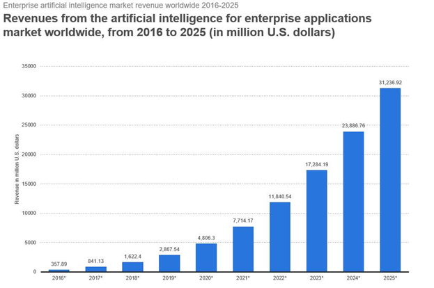

Artificial intelligence uses
links:
- home
- introduction about Artificial intelligence
- Artificial intelligence uses
- Categorization of Artificial Intelligence
- Some advantages and disadvantage of artificial intelligence
- permanent work: this is through the ability of machines to work continuously without feeling tired or bored , and their ability to produce constantly without looking at the time.
- applications that are important for daily life: artificial intelligence provides many applications that have become important for the daily life of people , and the smart phones and its various smart systems, such as GPS,is one of the most prominent examples of the human need for different applications of artificial intelligence.
- providing medical care: there are many systems of artificial intelligence that provide medical care to humans, it helps to detect neurological disorders or that allow the patient to know the side effects of medications , and it helps in surgery, and it must also be mentioned applications of radio surgery that help to remove tumors without damaging the surrounding healthy tissues.
- ability to process massive amounts of data: artificial intelligence system can handle massive amounts of data, storage, and processing.
- accuracy and reduce margin of error: the human use of artificial intelligence systems contributes to reducing the percentage of error that may occur during the implementation of tasks, except for the great accuracy in performing these tasks.
- doing the hard work: artificial intelligence system can do things that humans may unable to perform such as exploring hard to reach places like the ocean floor.
- failure to arbitrate emotion: unlike humans, artificial intelligence is not affected by any emotions that may impede the course of work , as these systems are not moody but rather operate according to a logical way of thinking, which makes them able to make the right decisions within a short time.
- revenues from artificial intelligence for enterprise application market worldwide are big and growing.
